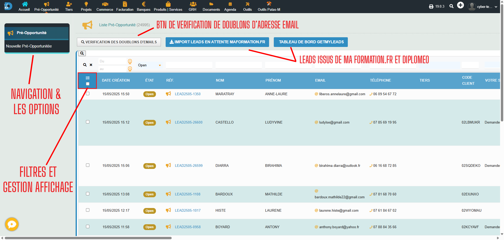
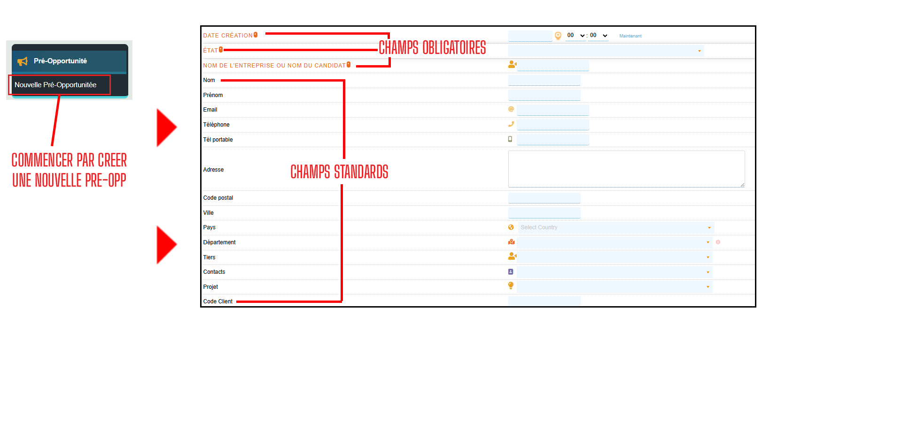
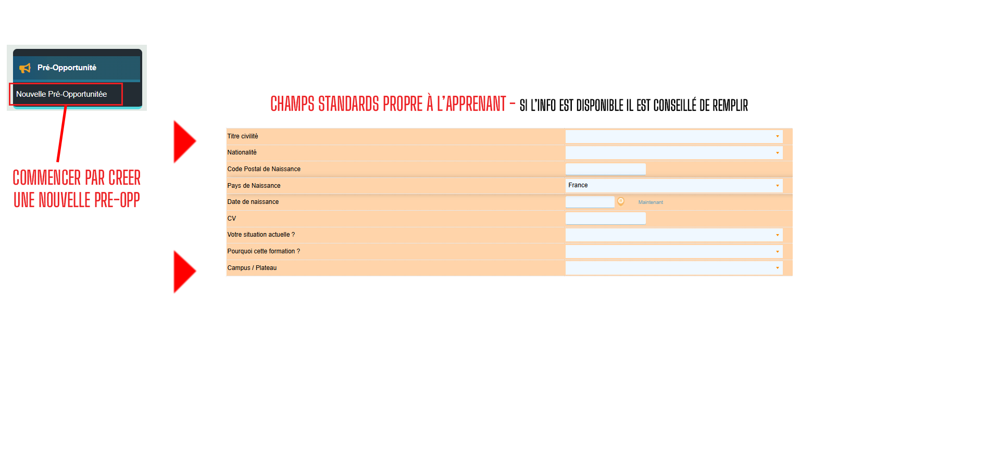
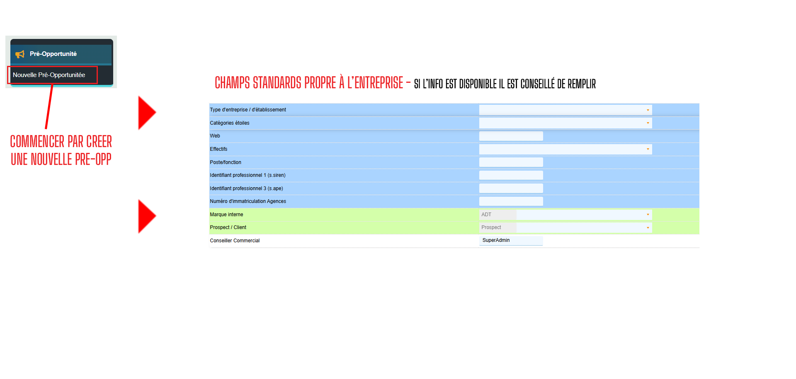
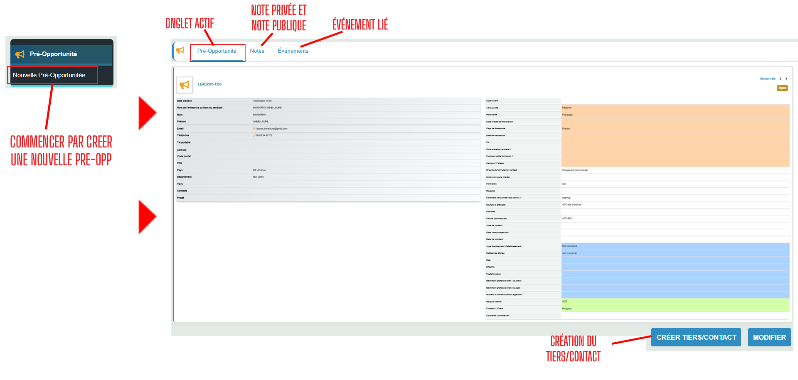

Comprendre le module Pré-Opportunité
Le module Pré-Opportunité dans Dolibarr vous permet de suivre et de gérer les premières étapes de votre processus commercial, avant même que le prospect ne devienne une opportunité qualifiée.
Prsentation interface
Découvrez comment configurer le module Pré-Opportunité pour l'adapter à votre cycle de vente.

Dans cette interface, vous pouvez visualiser toutes vos pré-opportunités, les filtrer par statut, et accéder aux détails de chaque pré-opportunité.
Création d'une pré-opportunité
Apprenez à créer et qualifier une pré-opportunité dans Dolibarr.



Suivi d'une pré-opportunité existante : Détails de la fiche
Depuis le listing global, cliquez sur une pré-opportunité pour accéder à ses détails.

Conversion en opportunité
Le processus pour convertir une pré-opportunité qualifiée en opportunité commerciale.
Rapports et analyses
Comment générer des rapports pour analyser vos pré-opportunités et optimiser votre prospection.